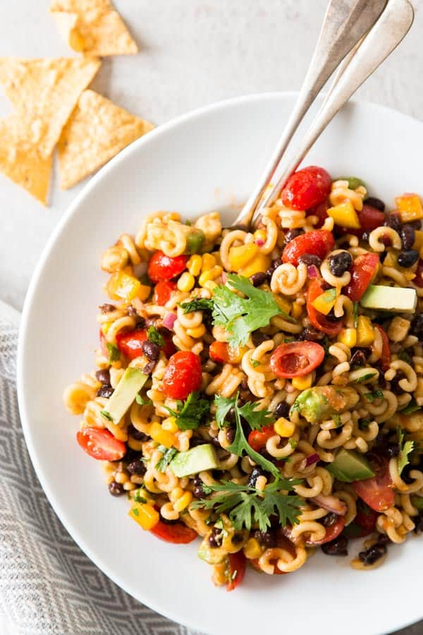

Mexican Macaroni Salad

This super easy pasta salad with satisfy your cravings and wallet
Loaded with color and flavor, this vegan Mexican Macaroni salad can be made in a total of 20 minutes with very simple ingredients including: bell pepper, tomatoes, sweet corn, onion, black beans, salsa and spices. Try it tonight!
Ingredients
- 2 1/2 cups dry macaroni (any kind)
- 1 yellow pepper - diced
- 1 avocado - diced
- 1 pint cherry tomatoes - halved
- 1 red onion - chopped
- 2/3 cup sweet corn kernels
- 1 can black beans- rinsed
- 1 cup salsa
- 2 tablespoons olive oil
- 1 tablespoon red wine vinegar
- 1/2 tablespoon taco spices
- 1/4 cup chopped cilantro
Steps
- Cook the macaroni according to package directions. Drain and rinse under cold water to stop the cooking process.
- In the meantime, combine all other ingredients in a large salad bowl.
- Add macaroni and toss well.
- Enjoy!